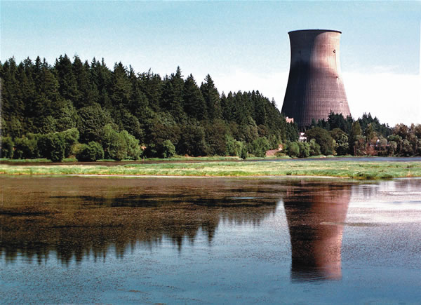
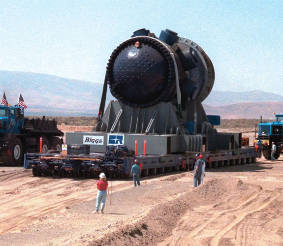
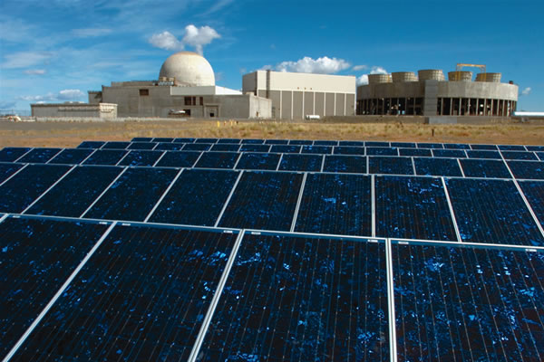

The True Costs Of Nuclear Power
Taxpayer subsidies for high-risk nuclear power plants should be redirected to promote alternative energy.
By Mark Hertsgaard
April/May 2006
During a July 2005 lecture in San Francisco, Jared Diamond, author of the best-selling book Guns, Germs and Steel, became the latest and most prominent environmental intellectual to endorse nuclear power as a necessary response to global warming.
Addressing an overflow crowd at the Cowell Theater about why some societies fail and others dont (the theme of his most recent book, Collapse), Diamond three times cited global warming as a threat that could ruin modern civilization. During the question period, Diamond was asked if he agrees with Stewart Brand, whose Long Now Foundation sponsored the lecture, that global warming poses such a grave threat that humanity should embrace nuclear power. It was a delicate moment, because Brand the former editor of The Whole Earth Catalog was on stage with Diamond.
I did not know that Stewart Brand said that, Diamond replied. But yes, to deal with our energy problems we need everything available to us, including nuclear power. Nuclear power, he added, should simply be done carefully, like they do in France, where there have been no accidents.
I did not expect that answer, Brand said. Neither, it seemed, did much of the audience. Overwhelmingly white and affluent, most audience members had nodded reverentially at everything Diamond had said thus far about the self-destructiveness of ancient civilizations that leveled forests (Easter Island) or eroded soils (the Mayans) in pursuit of short-term gain; and about the need for the United States to rethink its core value of consumerism if it hopes to survive. They had clapped when Diamond mocked President Bushs see-no-evil approach to environmental protection. Yet now Diamond was urging an expansion of nuclear power, a technology most environmentalists regard as irredeemably evil.
Deal with it, crowed Brand as the crowd sat in stunned silence.
It was smug but useful advice, for this debate is bound to intensify. The Bush administration and much of Congress are pushing hard to revive the nuclear industry, which currently provides 20 percent of Americas electricity.
In June 2005, Bush became the first president in 26 years to visit a nuclear power plant, specifically the Calvert Cliffs facility near Washington, D.C., where he endorsed nuclear as an environmentally friendly energy source. His administrations 2006 budget increased nuclear power funding by 5 percent, even as it cut overall renewable energy funding.
Congress did likewise in its 2005 energy bill. Besides giving the nuclear power industry $7 billion in research, development and construction subsidies and $7.3 billion in tax breaks, the bill contains guarantees for unlimited taxpayer-backed loans and insurance protection for new reactors.
Diamond may not agree with Bush about much, but their shared support for nuclear power hints at the other factor that will drive the future debate. As the United States experiences more of the killer heat waves and hurricanes that have struck the Midwestern and Southeastern states, more and more Americans will at last recognize what the rest of the world has long accepted: Global warming is here, it will get worse before it gets better, and the economic and human costs will be enormous.
As we cast about for alternatives to the carbon-based fuels coal, oil and natural gas that are cooking our planet, nuclear power seems an obvious answer. After all, as Vice President Cheney observed in 2001 when defending the Bush administrations energy plan which urged constructing hundreds of new nuclear plants nuclear fission produces no greenhouse gases.
But the truth is that nuclear power is a global warming weakling. Investing in a nuclear revival would make our global warming predicament worse, not better. The reasons have little to do with nuclear safety and more to do with economics, which may be why environmentalists tend to overlook them.
Environmentalists center their critique of nuclear energy on safety concerns: Nuclear reactors can suffer meltdowns from malfunctions or terrorist attacks; radioactivity is released in all phases of the nuclear production cycle, from uranium mining through fission; the problem of waste disposal still hasnt been solved; civilian nuclear programs can spur weapons proliferation. But absent a new Chernobyl-scale disaster, such arguments may not prove decisive. In an atmosphere of desperation over how to keep our TVs, computers and refrigerators humming in a globally warmed world, economic considerations will dominate. This is especially so when dissident greens such as Diamond and Brand are saying that nuclear safety is a solvable problem.
The dissidents have an arguable case. Diamond is correct that France has generated most of its electricity from nuclear power for decades without a major mishap. Likewise, its unfair to tar Western companies with the brush of Chernobyl. Incredibly, the Soviet-designed Chernobyl reactor lacked a containment vessel, a flaw that would never be allowed in the West.
Dissident greens concede there are risks with nuclear power, as with any technology. But those risks, they say, are less than those of the alternatives. Coal, the worlds major electricity source, kills thousands of people a year through air pollution and mining accidents. Coal also is the main driver of climate change, which is on track to kill millions of people in the 21st century not in a sudden bang of radioactive explosions, but in a gradual whimper of environmental collapse as soaring temperatures and rising seas submerge cities, parch farmlands, crash ecosystems and spread disease and chaos worldwide.
Fear of such an apocalypse led the scientist James Lovelock to become the first prominent environmentalist to endorse nuclear power as a global warming remedy. Patrick Moore, a co-founder of Greenpeace (who left the group a decade ago), soon echoed Lovelocks apostasy, as did Hugh Montefiore, a board member of Friends of the Earth. All three were criticized by fellow greens.
But environmentalists on both sides of this argument are overlooking the strongest objection to nuclear power, even as the nuclear industry is hoping no one notices it.
The best case against nuclear power as a global warming remedy begins with the fact that nuclear-generated electricity is very expensive. Despite more than $150 billion in federal subsides over the past 60 years (roughly 30 times more than solar, wind and other renewable energy sources have received), nuclear power still costs substantially more than electricity made from wind, coal, oil or natural gas. This is mainly due to the cost of borrowing money for the decade or more it takes to get a nuclear plant up and running.
Remarkably, this inconvenient fact does not deter industry officials from boasting that nuclear is the cheapest power available. Their trick is to count only the cost of operating the plants, not of constructing them. By that logic, a Rolls Royce is cheap to drive because only the cost of gasoline matters,not the sticker price as well.
The marketplace, however, sees through such blarney. As Amory Lovins, the energy guru who directs the Rocky Mountain Institute a think tank that advises corporations and governments on energy use points out, Nowhere [in the world] do market-driven utilities buy, or private investors finance, new nuclear plants. Only continued massive government intervention is keeping the nuclear option alive.
A second strike against nuclear power is that it only produces electricity, and electricity amounts to only a third of the United States total energy use (and less of the worlds). Nuclear power thus addresses only a small fraction of the global warming problem having no effect whatsoever on two of the largest sources of carbon emissions: driving vehicles and heating buildings.
The upshot is that nuclear power is seven times less cost-effective at displacing carbon than the cheapest, fastest alternative better energy efficiency, according to studies by the Rocky Mountain Institute. For example, a nuclear power plant typically costs at least $2 billion, or up to $5 billion with overruns. That money could be spent to insulate drafty buildings, purchase hybrid cars or install superefficient light bulbs and clothes dryers. Such an investment would lead to seven times less carbon consumption than if that money were spent on a nuclear power plant. In short, energy efficiency offers a much bigger bang for the buck. In a world of limited capital, investing in nuclear power will divert money away from cheaper and faster responses to global warming, thus slowing the worlds withdrawal from carbon fuels at a time when speed is essential.
Mainstream environmentalists do argue that energy efficiency, solar, wind and other renewable energies are better weapons against global warming than nuclear power. But they will fare better if they go a step further and point out that embracing nuclear power is not just unnecessary, but a step backward.
Even so, a tough fight lies ahead. As the 2005 energy bill illustrates, the nuclear power industry has many friends in high places. The case for nuclear power will strengthen if its economics improve. The key to lower nuclear costs is to reduce the amount of time it takes to build nuclear power plants, which could happen if the industry at last adopts standardized reactors and the U.S. government streamlines the plant-approval process.
On a more fundamental level, any defeat of nuclear power is likely to be short-lived if America does not confront what Diamond calls its core value of consumerism. After all, there is only so much waste to wring out of any given economy. Eventually, if human population and appetites keep growing and some growth is inevitable, given the ambitions of China and other newly industrializing nations new energy sources must be exploited. At that point, nuclear power and other undesirable alternatives will be waiting.
Environmentalists have been afraid to talk honestly about Americas consumerism for decades, ever since a cardigan-wearing Jimmy Carter was ridiculed for urging people to turn down their thermostats during the 1979 oil crisis. But now that we have managed through our carbon-fueled pursuit of the good life to turn up the planets thermostat to ominous levels, its time to break the silence. We dont have to freeze in the dark far from it but neither can we keep consuming as if theres no tomorrow.
Mark Hertsgaard is a fellow at The Nation Institute and author of Nuclear Inc.: The Men and Money Behind Nuclear Energy and Earth Odyssey: Around the World in Search of Our Environmental Future. Contact Hertsgaard through his Web site, www.markhertsgaard.com.
|
 AP PHOTO/DON RYAN The reactor from the Trojan Nuclear Power Plant in Portland, Ore., is positioned for burial at the Hanford Nuclear Reservation near Richland, Wash. The Trojan plant began operation in 1976 but was plagued by structural problems and opposition from environmentalists before it was closed in 1992. The power plant became a symbol of greed, evil and environmental negligence on the cartoon The Simpsons. |
 AP PHOTO/STEVE GOWEN A construction worker walks through the main tunnel inside Yucca Mountain in Nevada, which the U.S. government has proposed as the long-term storage facility for spent nuclear fuel and other high-level radioactive waste. The repository is tentatively scheduled to begin accepting waste in 2012, but it is widely opposed by Nevada residents because of safety issues, security concerns and seismic activity inside the mountain. |
 AP PHOTO/NEVADA APPEAL, RICK GUNN More than 200 solar panels generate power outside an abandoned nuclear power plant near Richland, Wash. This solar project is an exploration into renewable energy by the public power agency Energy Northwest, which provides electricity to public utilities in the Northwest. |
|
 AP PHOTO/JACKIE JOHNSTON |
|
|